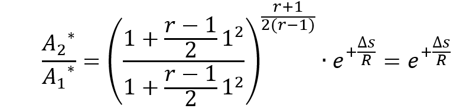
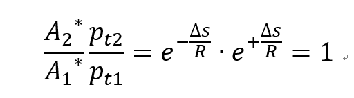
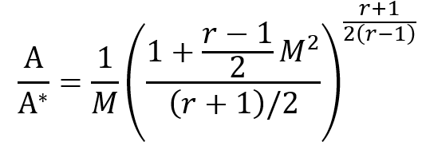
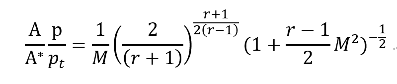

[Gas Dynamics] Ch 5 Varying - Area Adiabatic Flow - part2
지난시간에 State 1->2 로 갈때 Ma1, Ma2 를 이용해서
온도비율,압력비율, 밀도 비율, 뿐문아니라 면적비율을 계산해 보았습니다.
이제 하나더 중요한 개념 바로 reference * 을 과학자들은 정의했습니다. 굳이 왜?
![[Gas Dynamics] Ch 5 Varying - Area Adiabatic Flow - part2](./images/img-001.png)
[일단. Chapther 3에서 Stagnation point에 대해서 다뤘었죠 이것도 사실 imaninary 한 과학자들이 만든 개념
이걸 만듬으로써 state1t, state2t를 비교하면, Stagnation Enthalpy pressure 변화가 일정한지를 확인 할 수 있었고
no heat, no shaft work -> Stagnation Enthalpy 일정
no heat, no shaft work, no friction -> Stagnation Pressure 일정
즉, 조건들에 따라서 바로바로 적용이 가능한 기가막힌 개념이었죠]
Reference 정의는 State1 에서 Isentropic 과정을 거쳐 Ma1=1인 State에 도달 했을때
새로 도달한 State를 Reference of State1 이라고 부릅니다.
그럼 Reference * 는 어떤 편리함을 우리에게 줄까?
바로 우리가 part1에서 유도했던 식들을 Table화 할 수 있게 해준다는 것
지난시간에 Ma1->Ma2 값을 통해서 온도,압력,밀도,면적 비율을 계산 하였는데
1->1 과정이 Isentropic 이라고 정의 + Ma1 =1 이니까
우리는 지난번에 구한 식에 Ma2=1을 대입하여 완전 간편하게 그냥 Ma1,r에 관한 식으로 나타낼 수 있겠죠?
실제 식에 대입해보면 바로 이해갑니다.
reference 를 전에 구한 면적 식에 적용
![[Gas Dynamics] Ch 5 Varying - Area Adiabatic Flow - part2](./images/img-002.png)
a) State1 -> State2 인경우
A1: State 1에서 Isentropic 과정을 통해 Ma=1에 도달 했을 때의 면적
A2: State 2에서
Isentropic 과정을 통해
Ma=1에 도달 했을 때의 면적
Ma=1 에 도달했으니까
M2=1, M1=1 이 겠죠? 대입해주면

엔트로피의 Natural constant 항만 남게 됩니다.
잠깐 어디서 많이 본 항이지 않나??
바로 Stagnation pressure - Entropy Equation
Assumptions(Adiabatic, Steady state, 1-D, No shaft work, Ideal gas)인 경우
![[Gas Dynamics] Ch 5 Varying - Area Adiabatic Flow - part2](./images/img-004.png)

Area change Adiabatic flow 에서 가장 중요한 Equation이 derived
즉
엔트로피의 변화에 상관 없이
Reference 면적비율과 stagnation pressure 비율의 곱은 1 이라는 것.
b) State1 -> State1 인경우
![[Gas Dynamics] Ch 5 Varying - Area Adiabatic Flow - part2](./images/img-006.png)
위 식에서 M1=M, M2=1=M, Entropy constant(Isentropic process이므로)
![[Gas Dynamics] Ch 5 Varying - Area Adiabatic Flow - part2](./images/img-007.png)
이렇게 Reference 와 Static 사이의 면적 관계식이 Ma,r 로 표현됩니다.
우리가 지금까지 뭘 했나?? Stagnation, reference 라는 Imaginary point를 정의하고
각 point와 Static point를 비교해서
Temperature, Pressure, Area 들을 f(Ma,r) 의 함수로 표현했었다.
즉 Ma number을 알고, 어떤 기체인지를 알면 cp/cv=r을 알 수 있기 때문에
모든 property 비율을 알 수 있는 것이다.
따라서 과학자들은
Isentropic Table 을 제작하여 각 Ma,r 일때 비율들이 어떻게 되는지를 표로 가시화 함.
과학자들이 표로 만들었단 말이 뭔말?? 얘네도 이 식들 안 외운거라는 말ㅋㅋ
절대 외울 필요없고 그냥 이 이런게 표에 있구나, 정도만 알면 완벽
마지막으로 표에 담은 모든 식들을 정리해보고 마무리 하겠습니다.
1. p/pt (static&stagnation pressure ratio)
![[Gas Dynamics] Ch 5 Varying - Area Adiabatic Flow - part2](./images/img-008.png)
2. T/Tt (static&stagnation temperature ratio)
![[Gas Dynamics] Ch 5 Varying - Area Adiabatic Flow - part2](./images/img-009.png)
3. A/A (static&Reference Area ratio)

3. Ap/Apt (static&Reference Area * static&stagnation pressure ratio)
